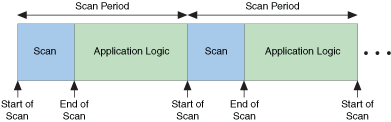

The NI Scan Engine enables efficient single-point access to sets of data channels, such as I/O channels, using a scan that stores data in a global memory map and updates all values at a single rate, known as the scan period. The NI Scan Engine installs on LabVIEW for Windows by default. You also can install the NI Scan Engine on supported LabVIEW targets, such as RT Series PXI and CompactRIO targets. Refer to the specific hardware device documentation for information about NI Scan Engine support.
(Real-Time Module) By default, the NI Scan Engine runs in a thread above time-critical priority on RT targets, although LabVIEW includes the scan thread in the time-critical category when reporting CPU usage statistics. When running the NI Scan Engine at above time-critical priority, you must synchronize the deterministic sections of the application with the scan period to ensure that the scan thread does not affect the determinism of the application. For applications in which I/O is not the highest-priority task, you also can configure the priority of the scan engine to fall between time-critical and Timed Structure priority. If you do not plan to use I/O variables on a target, do not install the NI Scan Engine on the target. If the NI Scan Engine is already installed on the target, you can use Measurement & Automation Explorer (MAX) to uninstall the NI Scan Engine.
|
Note�� (Windows) The only NI Scan Engine priority available on Windows is normal priority. Because of the non-deterministic nature of the Windows operating system, the timing of the NI Scan Engine is not guaranteed when running on Windows. |
Use the Scan Engine page to configure scan engine settings including the scan period, network-publishing rate, and priority level of the NI Scan Engine.
Use the NI Distributed System Manager to monitor and manage scan engine faults and modes. Select Tools�Distributed System Manager to display the NI Distributed System Manager. You also can use the NI Scan Engine VIs to view and configure scan engine settings programmatically.
After you configure NI Scan Engine settings in the Project Explorer window, you must deploy a project item that uses the NI Scan Engine, such as My Computer or an RT target, for the settings to take effect.
(Windows) The NI Scan Engine starts running the first time you deploy the target and stops running when you close the project. To automatically deploy the NI Scan Engine and I/O variables when a built application runs, you must enable the Include target hardware configuration checkbox on the Advanced page of the Application Properties dialog box before building the application.
(Real-Time Module) When running on an RT target, the NI Scan Engine starts automatically when you boot the target and runs continuously until you shut down the target.
A single computer can run only a single instance of the NI Scan Engine at a time. For example, if you create a Windows built application that uses the NI Scan Engine, you must close the project from which you built the application before you can run the application on the same computer. Although you can configure multiple instances of the NI Scan Engine in multiple LabVIEW projects, deployment of subsequent projects using the NI Scan Engine fails if an instance of the NI Scan Engine is running. To run a different instance of the NI Scan Engine, you first must stop the current instance.
The NI Scan Engine executes at regular intervals determined by the Scan Period you specify on the Scan Engine page. Choose a period long enough to accommodate both the scan itself and the application logic, as shown in the following illustration:

|
Note��The length of the scan depends on the number and type of I/O items deployed to the target. To maximize scan engine performance, undeploy any I/O items that you do not plan to use in the application. |
Use the Get Scan Engine Period VI to read the scan period programmatically. Use the Set Scan Engine Period VI to set the scan period programmatically.
|
Note�� (Real-Time Module) Real-time loops generally need one or two warm-up iterations to begin executing deterministically. Before checking to ensure that an application meets timing requirements, you should allow each time-critical loop to execute warm-up iterations. |
(Real-Time Module) Unless you configure the NI Scan Engine to run below time-critical priority, you must synchronize time-critical code to the scan period to avoid collisions that could affect the determinism of the application.
Use the Synchronize to Scan Engine timing source to synchronize timed structure execution to the scan engine. If you do not want to use a timed structure, you can use the Synchronize to Scan Engine VI to synchronize to the scan engine. Both synchronization methods trigger execution at the time labeled End of Scan in the previous illustration. To use I/O variables as a coherent data set, ensure that the synchronized code finishes executing before the next scan iteration. However, you can skip scan iterations if the code does not depend on a coherent data set.
|
Note��If synchronized code does not finish executing before the next scan iteration, the information reported by the error cluster of an I/O variable might lose synchronization with the I/O value. |
|
Note��When you click the Abort button on a VI that involves synchronization to the NI Scan Engine, the VI does not abort until the current scan iteration completes, so the VI might appear to hang temporarily if the scan period is sufficiently long. |
|
Note��Only certain targets and devices use NI Scan Engine modes. CompactRIO targets with local I/O modules do not use NI Scan Engine modes. Refer to the I/O hardware documentation for information about hardware-specific mode behavior. |
LabVIEW defines four NI Scan Engine modes:
| 0 | Initialization Mode | Occurs only briefly during startup. |
| 1 | Configuration Mode | The required mode when configuring scan engine settings on hardware that uses NI Scan Engine modes. |
| 2 | Active Mode | The mode in which the scan engine runs and updates values. |
| 3 | Fault Mode | The mode triggered when a major or unrecoverable fault occurs. |
|
Note��Fault mode behavior varies by target. Refer to the specific target hardware documentation for information about fault mode behavior. |
Use the NI Distributed System Manager to view and configure the scan engine mode. The NI Distributed System Manager displays the value of the scan engine mode using the EngineState status item. Use the Get Scan Engine Mode VI to read the scan engine mode programmatically. Use the Set Scan Engine Mode VI to set the scan engine mode programmatically.